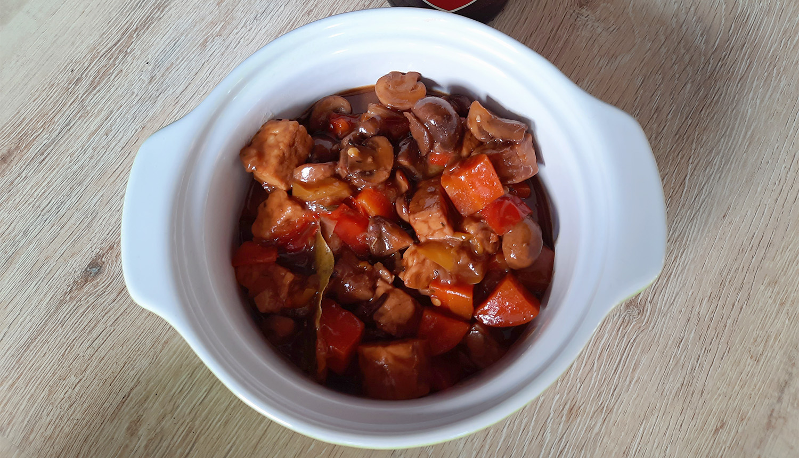

biefstuk chimichurri & gegrilde groenten

bami met spinazie

japanse beef teriyaki

banh xeo hoi an style
koreaanse bibimbap
biet wellington
vega_zoervleis
hachvega
De veganistische variant op hachee!

Bereidingsduur: 100 minuten
Aantal personen: 2
Ingrediënten:
3 stuks paprika
200 gram champignons
2 uien
3 stuks wortels
175 gram seitan
1 theelepel tijm
3 theelepels paprikapoeder
3 kruidnagels
1 theelepel kaneel
2 laurierblaadjes
1 theelepel komijn
naar smaak bruine suiker
1 flesje bruin bier
2 blokjes groentebouillon
2 eetlepels bloem
naar smaak ketjap
frietjes
3 stuks paprika
200 gram champignons
2 uien
3 stuks wortels
175 gram seitan
1 theelepel tijm
3 theelepels paprikapoeder
3 kruidnagels
1 theelepel kaneel
2 laurierblaadjes
1 theelepel komijn
naar smaak bruine suiker
1 flesje bruin bier
2 blokjes groentebouillon
2 eetlepels bloem
naar smaak ketjap
frietjes
Instructies:
1. Snijd de uien, paprika, wortels en champignons. Verhit olie of boter in braadpan en bak de uien en paprika tot de uien glazig beginnen te worden. Voeg de champignons, wortel, paprikapoeder, komijn, kaneel en seitan toe en roer een paar minuten.
2. Voeg het bier, bloem, de bouillontabletten, 500 ml water, tijm, kruidnagels en laurierbladeren toe en laat 45 minuten sudderen met de deksel op de pan. Indien gewenst voeg ook wat ketjap of bruine suiker toe.
3. Controleer af en toe of de saus dik genoeg is en haal eventueel het deksel eraf.
4. Verwijder de laurierbladeren en kruidnagels.
5. Maak frietjes klaar en serveer met de hachee.
1. Snijd de uien, paprika, wortels en champignons. Verhit olie of boter in braadpan en bak de uien en paprika tot de uien glazig beginnen te worden. Voeg de champignons, wortel, paprikapoeder, komijn, kaneel en seitan toe en roer een paar minuten.
2. Voeg het bier, bloem, de bouillontabletten, 500 ml water, tijm, kruidnagels en laurierbladeren toe en laat 45 minuten sudderen met de deksel op de pan. Indien gewenst voeg ook wat ketjap of bruine suiker toe.
3. Controleer af en toe of de saus dik genoeg is en haal eventueel het deksel eraf.
4. Verwijder de laurierbladeren en kruidnagels.
5. Maak frietjes klaar en serveer met de hachee.
Tip: gebruik pulled seitan zodat je een beetje de structuur van vlees krijgt.